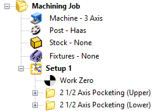
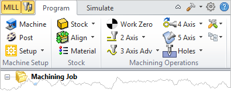
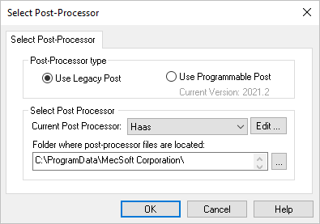
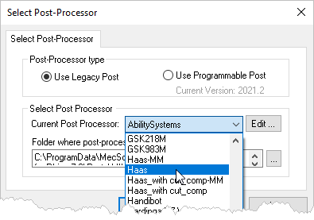
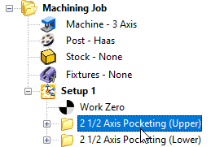
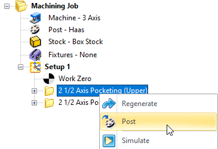
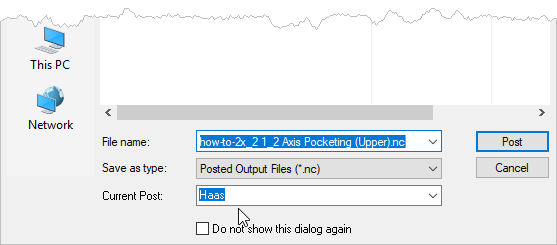
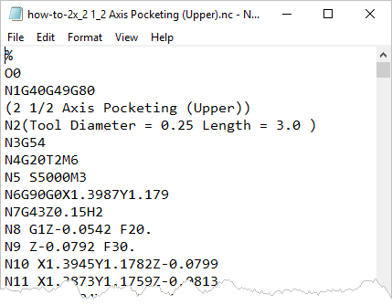
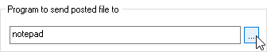

RhinoCAM installs with over 300 pre-defined post-processors for the most popular CNC machine controllers.
1.Create and adjust the toolpath operations that you want to post G-Code for.
2.Make sure the toolpaths have generated cleanly. Each toolpath when generated is listed under a Setup in the Machining Job. If the operation is flagged it means that it needs to be regenerated.
 Note: MILL Module shown, Similar for MILL-TURN, TURN and Profile-NEST |
3. From the Program tab, select Post to display the dialog.
 Note: MILL Module shown, Similar for MILL-TURN, TURN and Profile-NEST  Dialog Box: Set Post-Processor Options |
4.Select a Post from the Current Post Processor selection menu. See How to Define the Post-Processor for more information.
 |
5.Make sure you have simulated each toolpath and are satisfied with each toolpath operation. See How to Simulate a Toolpath for more information.
6.Select the operation that you want to post. You can select multiple operations by pressing the <Ctrl> key while selecting. You can also select an entire Setup or the entire Machining Job.
 Note: MILL Module shown, Similar for MILL-TURN, TURN and Profile-NEST |
7.Right-click on the selected operation(s) and select Post to display the dialog.
 Note: MILL Module shown, Similar for MILL-TURN, TURN and Profile-NEST |
8.Your Current Post is listed at the bottom of the dialog. You can change it here if desired.
 |
9.Navigate to the folder where you want the posted G-Code file to be saved.
10.Adjust the name of the G-Code file if desired.
11.Make sure the file extension (example: .nc) of the G-Code file is correct and that your CNC machine controller will read this file extension. Refer to your controller manual for this information.
12.Select the Post button and the G-Code file is calculated and displayed.
 |
13.G-Code files are ASCII Text Files and by default, are displayed in notepad, a windows generic text editor.
14.You can review the G-Code and make any manual edits if needed and save the file from notepad.
15.If you use a different text and G-Code editor program, you can tell RhinoCAM to display your G-Code files in this program. To do this select Post from the Program tab to display the dialog.
16. In the section of the dialog were it says Program to send posted file to select the ... button to the right to display the File Open dialog.
In the section of the dialog were it says Program to send posted file to select the ... button to the right to display the File Open dialog.
 |
17.Locate the .exe program that you use to edit your G-Code files with and then press Open.
18.Then pick OK to close the Set Post-Processor Options dialog.